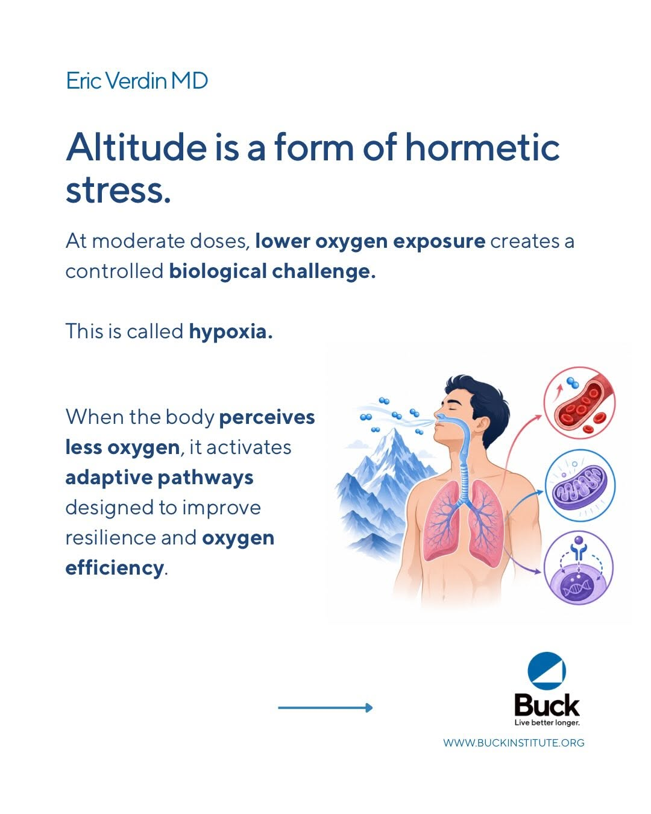
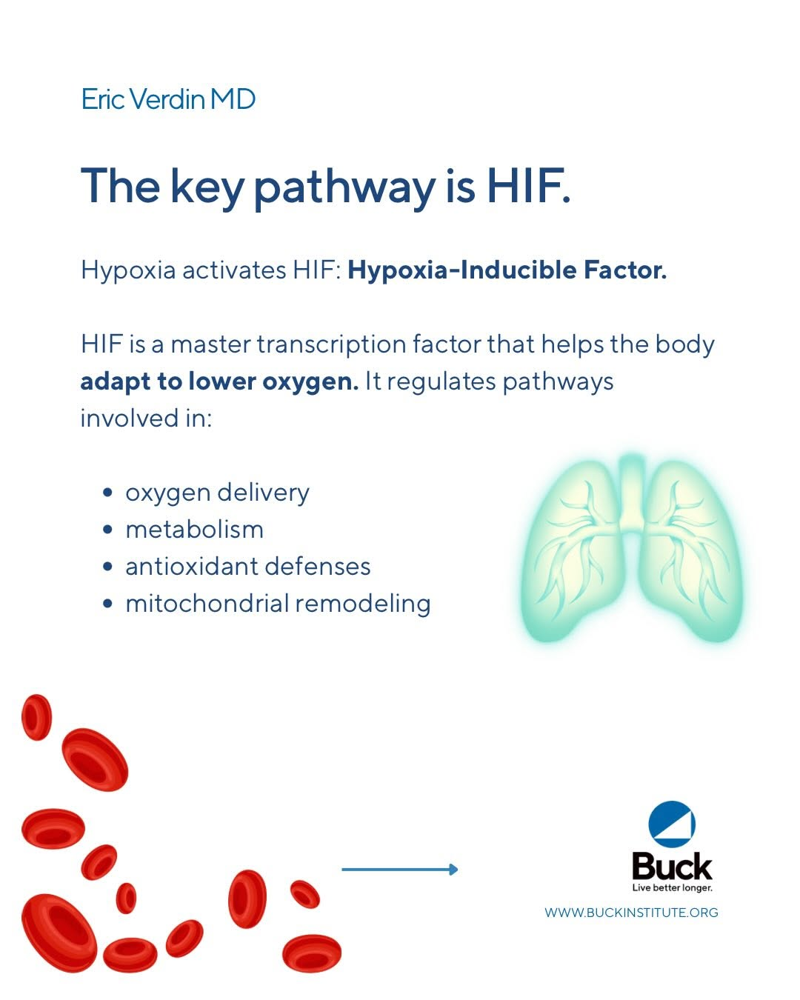
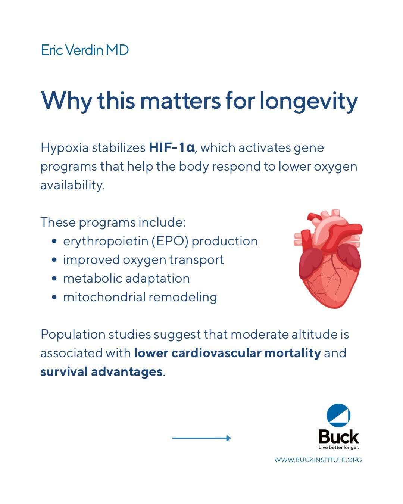
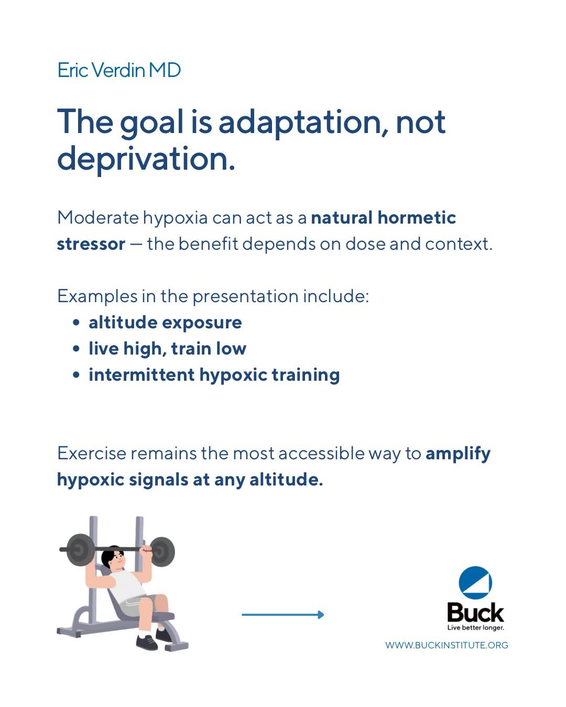

People who live at moderate altitudes have lower cardiovascular mortality than people who live at sea level.
Mild hypoxia is a form of hormetic stress, which turns on defensive pathways that are protective. (The key word here is “mild”.)
As a side note, hypoxia is one of the strongest inhibitors of mTOR.
#hypoxiaHD #hormesisHD #mtorHD #cvdHD #hifHD
Most people see thin air as a problem. The body reads it as a signal.
Drop oxygen availability moderately and predictably, and HIF (Hypoxia Inducible Factor) stabilizes. That single transcription factor coordinates a multi-system upgrade: more red blood cells, better oxygen transport, sharper mitochondrial efficiency, recalibrated metabolism, stronger antioxidant defenses.
This is hormesis. The dose makes the medicine. Acute, moderate, intermittent hypoxia trains the system. Chronic severe hypoxia damages it.
Three practical applications:
- Live high, train low (validated in elite endurance)
- Intermittent hypoxic training (normobaric chambers, altitude tents)
- Exercise at any altitude. Working muscle creates tissue hypoxia regardless of where you live
Population data backs it up. Residents of moderate altitude show lower cardiovascular mortality and survival advantages, even after adjusting for known confounders.
The frame matters. Low oxygen is not deprivation when it is dosed correctly. It is a stimulus your biology evolved to use.




